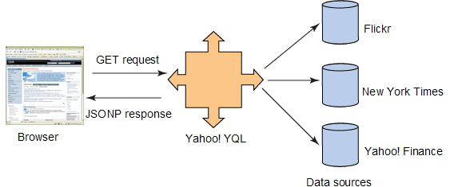
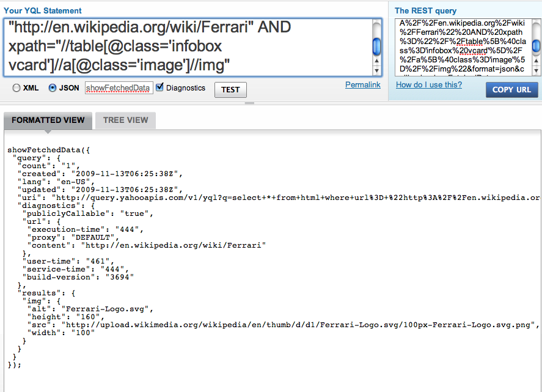

To πρόβλημα: Same Origin Policy.
Όπως θα γνωρίζετε ήδη οι περισσότεροι, ένας σοβαρός περιορισμός των client-side τεχνολογιών (Javascript, AJAX..), είναι το Same Origin Policy. Με λίγα λόγια, οι browsers δεν επιτρέπουν την χρήση scripts που δεν προέρχονται από το ίδιο domain, subdomain και port. Πολύ απλά δηλαδή όταν είσαι στο http://mysite.com δεν μπορείς να ζητήσεις εκτέλεση script που προέρχεται από οποιοδήποτε άλλο domain (http://yoursite.com), subdomain (http://www.mysite.com) ή σε άλλο port (https://mysite.com:81).
Σε μια προσπάθεια να ξεπεραστεί αυτό ο περιορισμός, έχουν επιστρατευθεί κατά καιρούς πολλές λύσεις όπως: 1) η χρήση proxy servers με βασικό ελάττωμα ότι δεν είναι βιώσιμη λύση για scalable εφαρμογές, 2) η χρήση frames μέσα σε μία εφαρμογή, όπου third-party περιεχόμενο μπορεί να έρθει αλλά και πάλι αυτό το περιεχόμενο δεν θα είναι προσβάσιμο από την υπόλοιπη εφαρμογή 3) ακόμα και λύσεις που εμπλέκουν flash τεχνολογία η οποία διαθέτει διαφορετικό cross domain policy
JSON with padding και Cross Site Scripting
Εδώ θα παρουσιάσουμε μία διαφορετική λύση, που βασίζεται στο γεγονός ότι το Same Origin Policy δεν απαγορεύει αυτό που λέμε στα ελληνικά dynamic script insertion. Με λίγα λόγια μια συνάρτηση που εκτελείτε στο current domain μπορεί να πάρει ως όρισμα, την εκτέλεση μιας συνάρτησης που βρίσκεται σε άλλο αρχείο, σε άλλο domain και γενικά οπουδήποτε. Ένα σύντομο παράδειγμα για να γίνει κατανοητό αυτό:
Στο http://yoursite.com/foo.js έχουμε την μοναδική γραμμή Javascript κώδικα
showFetchedData({ temperature: '35.2'});
Στο http://mysite.com/test.html έχουμε τον κώδικα
Με την παραπάνω τεχνική καταφέραμε ουσιαστικά, να μεταφέρουμε το δεδομένο ότι η θερμοκρασία είναι 35.2 βαθμοί, που δίνεται από την υπηρεσία του yoursite, στο mysite.!! Σε μια εξέλιξη του παραπάνω, θα μπορούσαμε να έχουμε πολλά δεδομένα στη κλίση της showFetchedData και να τα μεταφέρουμε στο δικό μας domain με μόνη προϋπόθεση να έχουμε ήδη ορίσει την showFetchedData στην δικιά μας πλευρά. Αυτή η σύνταξη των δεδομένων ονομάζεται JSONP (JSON with padding) και δεν είναι τίποτα άλλο από μια συνάρτηση με όρισμα δεδομένα σε μορφή JSON.
Mashups με YQL και Jquery.getJson()
Ωραία όλα αυτά, αλλά πόσες υπηρεσίες υπάρχουν που επιστρέφουν δεδομένα σε μορφή JSOΝP? Καλώς ή κακώς όχι πολλές.. Και εδώ έρχεται η χρήση της YQL. H Yahoo Query Language, μεταξύ των άλλων προσφέρει και την υπηρεσία data, που ουσιαστικά δέχεται query που ζητάει μια οποιαδήποτε ιστοσελίδα + (προαιρετικά) XPATH και επιστρέφει τα δεδομένα σε μορφή JsonP.


Όπως βλέπουμε μας επιστρέφει σε μορφή JsonP τα στοιχεία της εικόνας. Το μόνο που θα μας έλειπε θα ήταν ο ορισμός της showFetchedData. Αυτή την διαδικασία την αναλαμβάνει η jquery.getJson
$.getJSON("http://query.yahooapis.com/[ το YQL query ]&format=json&callback=?", function(data){
// data διαθέσιμο εδώ!!
// manipulating data.query.results.img
});
H YQL μας επιτρέπει να ορίσουμε το όνομα της callback συνάρτησης (της showFetchedData στα παραδείγματά μας) όμως επιλέγουμε ? ώστε να έχουμε τα δεδομένα διαθέσιμα στην συνάρτηση-όρισμα της getJson όπως φαίνεται και στο παράδειγμα.
Τέλος εδώ. Ελπίζω στο μέλλον να πούμε περισσότερα τόσο για τα client-side mashups όσο και για την YQL, που αποτελεί την απόδειξη ότι η Yahoo, όσο και αν πέφτει η μετοχή της, παρέχει ακόμα κορυφαίες υπηρεσίες.